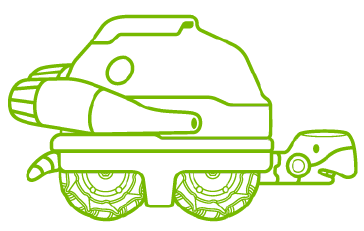
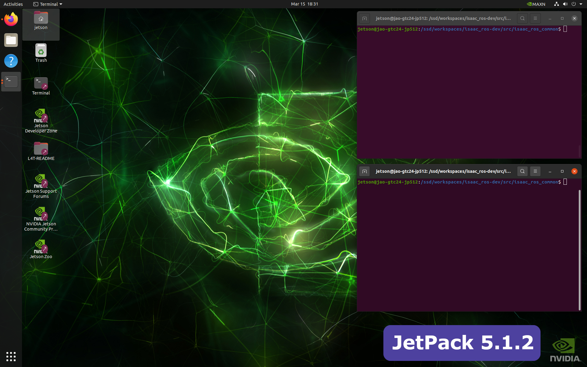

Hands-on Session on Isaac ROS

About Isaac ROS
Official Isaac ROS Documentation - Getting Started
NVIDIA has developed the Isaac ROS suite to harness hardware acceleration on NVIDIA Jetson and discrete GPUs, enhancing standard robotics applications. It maintains standard ROS interfaces for input and output, facilitating seamless integration and user-friendliness as a direct replacement for traditional CPU-based ROS frameworks familiar to robotics developers.
System Requirements
| Platform | Hardware | Software |
|---|---|---|
| Jetson | Jetson Orin Jetson Xavier |
JetPack 5.1.2 |
| x86_64 | NVIDIA GPU | Ubuntu 20.04+ CUDA 11.8+ |
All Isaac ROS packages are tested to be compatible with ROS 2 Humble. If your application is built with ROS 1, you can integrate it with Isaac ROS using the NITROS Bridge.
Lab setup
Info
The following exercise assumes that the Jetson is set up by roughly following the Isaac ROS's setup procedures below.
- Hardware Setup / Computer Setup / Jetson Platforms
- Developer Environment Setup for Jetson (NVMe installation)
- Developer Environment Setup
For the detail on how the GTC lab provided Jetson units are configured, please check this Jetson setup page.
Exercise 1. Run Isaac ROS dev container
Official Isaac ROS Documentation - Isaac ROS Common
We strongly recommend setting up your developer environment using Isaac ROS Dev Docker images to streamline your development setup with the correct versions of dependencies on both Jetson and x86_64 platforms. All tutorials have been designed with these docker images as a prerequisite.
Before you begin, verify that your device has sufficient storage available. We recommend at least 30 GB, which likely necessitates an SSD if running on Jetson platforms.
Note
For this exercise you will need two terminals open on the jetson and you can arrange them in the following manner

-
[ Terminal 1 ] Start the Isaac ROS dev container by executing the following command
echo $ISAAC_ROS_WScd ${ISAAC_ROS_WS}/src/isaac_ros_common && \ ./scripts/run_dev.sh ${ISAAC_ROS_WS}
-
[ Terminal 1 ] Once in the Isaac ROS dev container, source the workspace:
source /workspaces/isaac_ros-dev/install/setup.bash -
[ Terminal 2 ] When you need the 2nd terminal attached to the container, run this command again:
cd ${ISAAC_ROS_WS}/src/isaac_ros_common && \ ./scripts/run_dev.sh ${ISAAC_ROS_WS} -
[ Terminal 2 ] Once in the Isaac ROS dev container, again source the workspace:
source /workspaces/isaac_ros-dev/install/setup.bash
Exercise 2. Run Isaac ROS Nvblox with Rosbag
Official Isaac ROS Documentation - Isaac ROS Nvblox
About Nvblox
Isaac ROS Nvblox contains ROS 2 packages for 3D reconstruction and cost maps for navigation. The Nvblox node processes depth and pose to reconstruct a 3D scene in real-time. It also outputs a 2D costmap for Nav2.

Note
In this exercise, we will continue using the Terminal 1 and Terminal 2 set up in the above Exercise 1.
If you have not completed the exercise, follow the Exercise 1 to have them ready.
-
[ Terminal 1 ] Run the launch file for Nvblox with
nav2ros2 launch nvblox_examples_bringup isaac_sim_example.launch.py -
[ Terminal 2 ] Playback the recorded rosbag
Play the recorded rosbag file.
ros2 bag play src/isaac_ros_nvblox/nvblox_ros/test/test_cases/rosbags/nvblox_polRViz should start showing visualization like the following.